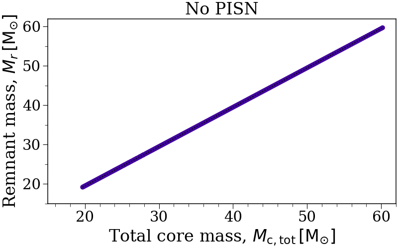
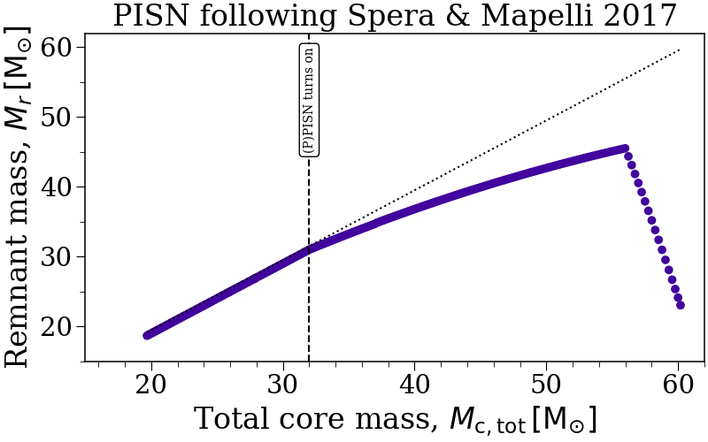
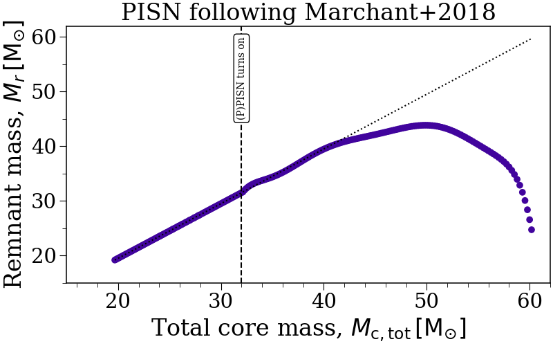
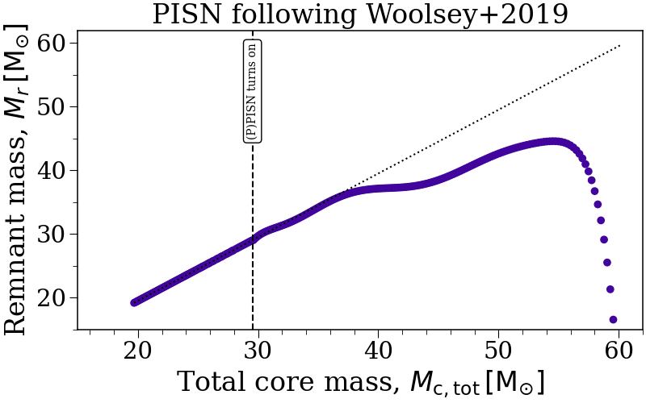
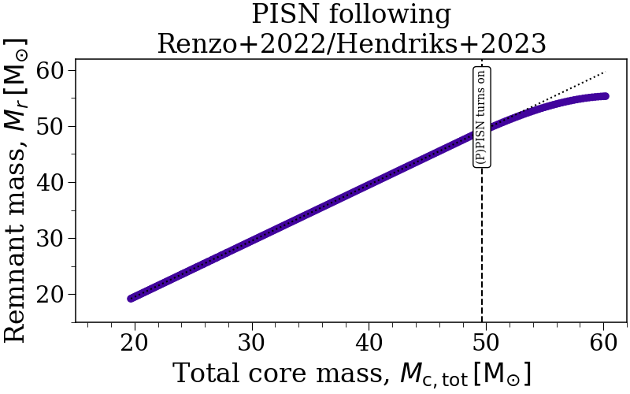
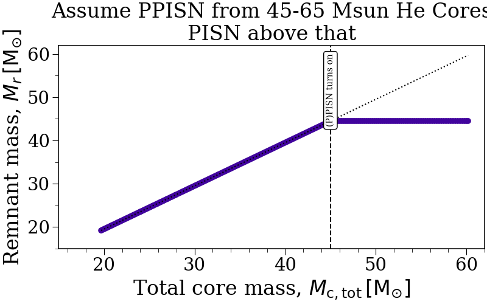

Note
Go to the end to download the full example code.
pisn¶
This example shows the effect of the pisn on the remnant masses for stars with large CO cores.
The pisn controls which prescription to use for pair-instability supernovae (PISN) for stars that are above a certain CO core mass.
The plots below show the remnant masses for a grid of single stars with different choices of the pisn flag at a metallicity of \(Z = 0.01 Z_{\odot}\).






#----------------------------------------------------------------------------------
#----------------------------------------------------------------------------------
## You'll want to edit this part locally to use your own BSEDict and style sheet!
import sys
sys.path.append("..")
import generate_default_bsedict
BSEDict = generate_default_bsedict.get_default_BSE_settings(to_python=True)
import matplotlib.pyplot as plt
plt.style.use("../_static/gallery.mplstyle")
#----------------------------------------------------------------------------------
#----------------------------------------------------------------------------------
import numpy as np
import astropy.units as u
import astropy.constants as consts
from cosmic.sample import InitialBinaryTable
from cosmic.evolve import Evolve
from cosmic.output import kstar_translator
pisn_flags = [0, -1, -2, -3, -4, 45]
labels = ["No PISN", "PISN following Spera & Mapelli 2017", "PISN following Marchant+2018",
"PISN following Woolsey+2019", "PISN following\nRenzo+2022/Hendriks+2023",
"Assume PPISN from 45-65 Msun He Cores\nPISN above that"]
bpps = {}
initCs = {}
for pisn_flag, label in zip(pisn_flags, labels):
n_grid = 250
binary_grid = InitialBinaryTable.InitialBinaries(m1=np.geomspace(50, 150, n_grid),
m2=np.zeros(n_grid),
porb=np.ones(n_grid)*-1.0,
ecc=np.ones(n_grid)*0.0,
tphysf=np.ones(n_grid)*13700.0,
kstar1=np.ones(n_grid),
kstar2=np.ones(n_grid),
metallicity=np.ones(n_grid)*0.014*0.01)
BSEDict['pisn'] = pisn_flag
bpp, _, initC, _ = Evolve.evolve(
initialbinarytable=binary_grid, BSEDict=BSEDict,
bpp_columns=['tphys', 'mass_1', 'kstar_1', 'massc_co_layer_1',
'massc_he_layer_1', 'evol_type', "SN_1", "kstar_2"],
nproc=16
)
final_bpp = bpp.drop_duplicates(subset="bin_num", keep="last")
fig, ax = plt.subplots(figsize=(8, 5), constrained_layout=True)
sn_rows = bpp[bpp["evol_type"] == 15]
co_core_mass = sn_rows["massc_co_layer_1"].values
total_core_mass = co_core_mass + sn_rows["massc_he_layer_1"].values
remnant_mass = final_bpp["mass_1"].values
kstars = sn_rows["kstar_1"].values
ax.scatter(total_core_mass, remnant_mass, c=[kstar_translator[k]["colour"] for k in kstars])
ax.plot(total_core_mass, total_core_mass - 0.5, color='k', ls=':')
ax.set(
xlabel=r"Total core mass, $M_{\rm c, tot} \, [\rm M_{\odot}]$",
ylabel=r"Remnant mass, $M_r \, [\rm M_{\odot}]$",
xlim=(15, 62),
ylim=(15, 62),
title=label
)
ax.yaxis.set_major_locator(plt.MultipleLocator(10))
ax.yaxis.set_minor_locator(plt.MultipleLocator(5))
ax.xaxis.set_major_locator(plt.MultipleLocator(10))
ax.xaxis.set_minor_locator(plt.MultipleLocator(2))
if pisn_flag == 0:
pisn_turn_on = -100
elif pisn_flag == -1:
pisn_turn_on = 32
elif pisn_flag == -2:
pisn_turn_on = 32
elif pisn_flag == -3:
pisn_turn_on = 29.53
elif pisn_flag == -4:
idx = np.argmin(np.abs(co_core_mass - 38))
pisn_turn_on = total_core_mass[idx]
else:
pisn_turn_on = pisn_flag
ax.axvline(pisn_turn_on, color='k', ls='--')
ax.annotate("(P)PISN turns on", xy=(pisn_turn_on, ax.get_ylim()[-1] - 2), rotation=90,
fontsize=10, bbox=dict(boxstyle="round", fc="w"), ha='center', va='top')
plt.show()
Total running time of the script: (0 minutes 20.346 seconds)